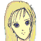

ダグラスの私室。夜着で窓を眺めるＡＪと、ベッドの中のキャロライン。
 ＡＪ 「月が、見えないな」
ＡＪ 「月が、見えないな」

キャロライン 「裏側も？」
ＡＪ 「ああ。月は今、地球の裏側にあるらしい」
キャロライン 「すぐに見えますよ」
ＡＪ 「・・・ああ。・・・キャロル、キミはどう思う？」
キャロライン 「何をです？」
ＡＪ 「我々はテロ的に局地攻撃をする性質上、攻撃には強い反面、攻められると脆さを露呈する・・・」
キャロライン 「そうですわね」
ＡＪ 「オフェンス・オンリー。それは、似たアルゴリズムを持つ海賊・・・アンセスターも同じだ。だが、私は彼らに煮え湯を飲まされ続けている・・・」
キャロライン 「・・・強いて言うなら、彼らは追われる事を前提に組織されているからだと・・・思います」
ＡＪ 「確かに、防御と言うより逃走だ。だが、それを認めれば、彼らはゲリラよりも、軍隊よりも脅威だと言う事になる・・・」
キャロライン 「弱気な言葉は、私に甘えてくれてるんだと解釈します」
ＡＪ 「ああ。甘えてるんだよ。・・・まだ終われないからな」
ナレーション 「体制勢力、議会・セグメント連合と、反体制勢力、エクレシアの戦いは、膠着状態に入っていた。それは、その陰に潜むユニオンの仕組んだ戦争に他ならない。アベルは、ユニオンに利用されていた真実を知り、ユニオンと戦う決意をする」
「一方、度重なる失敗で、アベルたちを追いきれないＡＪ・ダグラスは、イブレイの合流と同時に、退陣を迫られていた」
タイトル
|
− Downfall − |
イブレイ隊と合流するオデッセイア。
イブレイが先頭に立って進む。その後ろから、部下。中に、パーチとバーナバスの姿も。
オデッセイアのクルーは敬礼してそれを迎える。その中から、カインが敬礼したまま話し掛ける。
 カイン 「あっは。昇進おめでとうございます。イブレイ長官」
カイン 「あっは。昇進おめでとうございます。イブレイ長官」
 イブレイ 「今回の働き自体は認めるが、それ以前にマシン戦闘でケリを付けられなかった事についての言及は覚悟しておけよ、カイン」
イブレイ 「今回の働き自体は認めるが、それ以前にマシン戦闘でケリを付けられなかった事についての言及は覚悟しておけよ、カイン」
言いながら通り過ぎていくイブレイ。
カイン 「おっかないの。イブレイさんてアレだよね。立場が変わると態度まで変わるタイプ」
 イヴリン 「黙りなさい。ぶっ飛ばされたいの？」
イヴリン 「黙りなさい。ぶっ飛ばされたいの？」
カイン 「あは。あはは」
 バーナバス 「よぅ、イヴリン。また成長したか？」
バーナバス 「よぅ、イヴリン。また成長したか？」
後続のバーナバスが、手を自分の胸に当てながら言う。
イヴリン 「あんたの脳味噌よりはね」
イブレイ 「出迎えご苦労、キャロライン・ディベラ艦長」
 キャロライン 「はッ・・・」
キャロライン 「はッ・・・」
イブレイ 「既に承知だとは思うが、私が今後の全指揮権を、前任のダグラスから引き継ぐことになった」
キャロライン 「連絡は届いていますが、着任は月での辞令を受け取ってからだとうかがっています」
イブレイ、軍服から紙を出す。
イブレイ 「残念だが、これが辞令だよ。事態は急を要するのでね。月に到達する前に、無能な司令官を解任しなければならない」
キャロライン 「くっ・・・」
イブレイ 「小細工を労する時間は与えない。それと、ダグラス・・・、お前には解任状の他に、逮捕状も来ている」
キャロライン 「なッ！？」
もう一度、軍服から紙を出すイブレイ。
イブレイ 「軍規第５９条の３、守秘義務違反をはじめとし、命令違反、背信行為、その他７つの罪状だ。わかってるな」
ＡＪ 「結構。だが、逮捕という言葉は間違いだな。グレイゾンは刑法、民法、軍法のどれにも属さない」
イブレイ 「言葉など問題ではないよ。強いて言うなら、私刑だ。・・・ダグラス、お前を拘束する」
ＡＪ 「イブレイ。今、お前が突きつけた罪状・・・、全てお前にも当てはまる事だ。せいぜい、足下を掬われないようにな。お前と協力し合えなかったことは残念だ」
イブレイ 「ご忠告感謝する。連れて行け」
 兵士 「はッ」
兵士 「はッ」
キャロライン 「あッ・・・」
イブレイ 「さて、キャロライン・ディベラ艦長どの。もはやダグラスの復権はありえない。軍隊ごっこもこれで終わりだ。今なら、私はキミを解任してあげられる。それでもまだ、艦長を続けるか？」
キャロライン 「・・・う・・・」
イブレイ 「いずれにせよ。返事は月までお待ちします」
医務室。
虫の居所が悪そうに入ってくるイヴリン。
イヴリン 「胸糞悪いわ」
 ケーラー 「キミが医務室とは、どういった風の吹き回しだね」
ケーラー 「キミが医務室とは、どういった風の吹き回しだね」
イヴリン 「お知らせ。ダグラス長官と艦長が解任よ。・・・このままだと、ケーラー先生も危ないんじゃない？」
ケーラー 「ご心配は痛み入るが、私はホセ・カーロに高く買われているのでね。Ｇレジェンド計画が失敗しようと、クレイドル機関は続投だよ」
イヴリン 「ふン。そりゃどうも。アベルやカインがそんなにすごいンなら、量産しちゃってよ」
ケーラー 「キミは知るまいが、クローンはマシンと違って、急製造できる訳ではない。多少の短縮は可能でも、成長には十数年を要する」
イヴリン 「ッ！？」
ケーラー 「実際にアベルと同じ個体は８体作られたが・・・どうしたね？」
イヴリン 「何でも・・・ないわ」
ケーラー 「もっとも、キミは良くやってくれている。成績はともかくの話だが・・・。アベル、カイン、ザカリアに関しては、もともと普通の人間じゃない。だが、君らという成長材料がなければ・・・」
イヴリン 「悪いんだけど。薬、ちょうだい」
ケーラー 「む？ 何の薬だ？」
イヴリン 「頭痛でも生理痛でも頭が良くなるヤツでも」
ケーラー 「・・・それが医者に言うことかね」
マトリックス、ドック。
 ジーン 「かあっ、こりゃ絶望的だな」
ジーン 「かあっ、こりゃ絶望的だな」
 アベル 「すみません」
アベル 「すみません」
ジーン 「ここまで破壊されると、問題は金額よりもパーツだ。Ｇシリーズは特殊すぎるからなァ。同じパーツを作れない」
サイファーの整備をするケネス。
 ケネス 「ジーン、あんまり苛めンじゃねえぞ。愚痴ってもパーツは降ってこねえんだからな」
ケネス 「ジーン、あんまり苛めンじゃねえぞ。愚痴ってもパーツは降ってこねえんだからな」
ジーン 「わかってる。・・・しっかしなァ、いくら天才料理人でも、水と塩だけで料理は作れんぞ」
アベル 「・・・すみません」
ジーン 「ま。問題は決定的な戦力が一つ欠けるって事か・・・。能力的にはハインツを降ろして・・・」
ヴォーテックスの整備をするハインツ。
 ハインツ 「なにィ！？」
ハインツ 「なにィ！？」
ジーン 「俺が決める訳じゃないが、多分、満場一致だぞ」
ハインツ 「なんでよ！？」
独房。
兵士 「失礼いたします。長官」
ＡＪ 「気にする事はない。私はもう長官ではないらしいからね」
兵士 「はッ・・・、それでは・・・」
独房の外に出た兵士に近づく足音。
兵士 「あ、か、艦長・・・」
キャロライン 「失礼」
兵士 「か、艦長、その・・・、ここは・・・」
キャロライン 「ダグラスは解任されましたが、私の職務は続行です。不審に思うならイブレイ長官に問い合わせなさい」
兵士 「は、いえ、その・・・」
キャロライン 「ならば命令いたします。これより、ダグラスを尋問いたします。彼を部屋から出しなさい」
兵士 「は・・・、はい」
独房、ベッドに腰掛けていたＡＪが顔を上げる。
ＡＪ 「・・・やあ、尋問の時間かな」

アイキャッチ「Ｇ−ＧＵＩＬＴＹ」
廊下を進む、キャロラインとＡＪ。適当な空き部屋を見つけて入り込むと、すぐに鍵を閉める。
ＡＪ 「それで、どうするつもりだね？ キャロライン」
キャロライン 「私の権限で、退官と言う形を取って、刑罰だけは何とか避けさせます。・・・だから・・・」
泣くのをこらえつつ、ＡＪに抱きつくキャロライン。
ＡＪ 「・・・地球の、誰も知らない街で、２人で静かに暮らそうか・・・」
キャロライン 「アレックス・・・」
ＡＪ 「最初から、それだけを望めば、こんな遠回りをせずに済んだかも知れないな」
キャロライン 「それなら、月到着までに何とか、イブレイを説得します！ だからっ」
ＡＪ 「ああ。わかったよ。今まで、無茶をさせてすまなかった」
キャロライン 「力になれなくてごめんなさい。でも、愛してるわ。だから・・・」
ＡＪ 「わかったよ、キャロル。・・・イブレイから追求がある前に部屋に戻るよ。話をこじれさせる訳にはいかないからな」
キャロル 「あ。待って。今、ひどい顔してるから、顔が戻るまで・・・」
泣き顔のキャロラインは慌ててハンカチで顔を覆う。
ＡＪ 「泣き顔も綺麗だが、部下に見られたくはないだろう。・・・構わんよ。１人で戻れる。逃げ出しはしないさ」
キャロル 「・・・ええ。ごめんなさい」
キャロラインを残し、部屋を出るＡＪ。
ＡＪ、部屋を出ると、次第に早歩きになる。そのまま一路にマシンデッキへ。
人目を避けるようにして、ＡＪはＧアサルトのコックピットへ。
ＡＪ 「なるほど、内部での警戒がこれほど緩ければ、Ｇも奪われるはずだ。文字を並べただけのセキュリティを過信しているのか・・・」
ＡＪ 「パイロット認証コード、Ｘ２ＵＢＣ−ＸＥＲ」
ＡＪ 「さて、マシンの操縦は何年ぶりかな・・・」
アサルトが起動したことに気付くメカニックマン。
兵士 「あ？ なんだ？ アサルトに誰か乗ってるのか？」
 兵士 「いや、こんな時間にそれは・・・」
兵士 「いや、こんな時間にそれは・・・」
兵士 「おいっ！ 誰だっ！ 止めろ！！」
ＡＪ 「手加減など出来んぞ！ 早くハッチを開けろ！」ディバイダーを向けるＡＪのアサルト。
兵士 「な、なんだって！」
サイレンが鳴り出し、まだ部屋に残ったままのキャロラインが慌てる。
キャロライン 「なに！？ なんなの？」
ブリッヂ。
イブレイ 「まさか、ダグラスか！？ 何の冗談だ！？ 状況を！」
兵士 「はッ、ＡＪ・ダグラスと思われる人物がＧアサルトを奪ってハッチを破壊、現在逃亡中です」
イブレイ 「よりにもよってアサルトとはな！ スピードが・・・！ くそっ！ バーナバスのＦＡスレッジを出せ！」
兵士 「し、しかし！ スレッジはブースターを着装中で、直線飛行しか・・・！」
イブレイ 「ブースター付きでなければ追えん！ とにかく今すぐ射出しろ！ アサルトより前へ出る事が先決だ！ 粉の散布も忘れるな！ 他のマシンにも追跡させろ！ いいな！」
兵士 「はッ」
イブレイ 「アサルトを奪ったのは正解だよダグラス・・・。だが、そのバケモノを貴様が扱えると思ったのは失敗だ・・・。出撃、まだか！？」
バーナバス（通信） 「心配しなさんな。スレッジのブースターはスピードキングだ」
イブレイ 「ごちゃごちゃ言う時間があるなら出ろ！」
バーナバス 「Ａｌｒｉｇｈｔ！」
アサルトのコックピット。
ＡＪ 「くッ・・・！ アサルトのＤＲＥＳＳ・・・！ これほどのッ」
ＡＪ 「直線飛行でここまでの負担とはな・・・ッ！ 気を抜くと・・・！ 気絶っ、アベルやカインが・・・ッ！ いかに人外のバケモノなのか・・・ッ！ ぬッ！？ 今の光・・・、アサルトを抜くとしたら、スレッジか・・・」
ＡＪ 「間に合え・・・よッ」
ブリッヂに戻ったキャロライン。
キャロライン 「逃亡・・・？ あの人が・・・？」
イブレイ（通信） 「そうです。ダグラスは、組織を！ そしてあなたを裏切った！」
キャロライン 「そんなこと・・・、だって、地球で・・・だって・・・」
マトリックス、ブリッヂ。
 クルー 「後方より、高速接近中のマシン２機！ サイズから見て、先頭はフォートレスかも知れません。・・・それと、後続の一機からは救難信号が出てます！」
クルー 「後方より、高速接近中のマシン２機！ サイズから見て、先頭はフォートレスかも知れません。・・・それと、後続の一機からは救難信号が出てます！」
 ボッシュ 「ンだとぉ！？ なんで後続からだぁ！？」
ボッシュ 「ンだとぉ！？ なんで後続からだぁ！？」
クルー 「追ってきてるのは、おそらくオデッセイアからですよ。・・・どうします？」
ボッシュ 「救難が真実にしろ、罠にしろ・・・、出すしかねえぞッ！ 三機とも出撃させろ」
クルー 「・・・ソードケインは出られませんよ」
ボッシュ 「かあっ、２機を出撃させろ！ アベルはヴォーテックスだ！ デッキ、聞こえたな！？」
ジーン（通信） 「あー・・・。ヴォーテックス、ハインツでいいか？」
デッキ。
ボッシュ（通信） 「あん？」
ジーン 「もう、ハインツが出撃しちまった・・・」
ボッシュ（通信） 「馬ッ鹿野郎！ 遊びでやってるんじゃねえんだぞ！ すぐにケネスも出せ！」
ケネス 「わかってるって、大声出しなさんな。サイファー、出るぞ！」
ボッシュ（通信） 「どいつもこいつも・・・ったく」
ブリッヂ。
クルー 「艦長！ 通信・・・です！」
ボッシュ 「開け！」
ＡＪ（通信） 「聞こえ・・るか！？ こちらはアレックス・ダグラス。アンセスターへの亡命を乞う・・・！ 土産は最新のＧだ！ 繰り返す！ こちらはアレックス・ダグラス！ アンセスターへの亡命を乞う！」
ボッシュ 「ぉぃぉぃ、こいつァ、罠か？」
クルー 「手前のマシンから粉が散布されましたね。通信、切れました・・・」
ボッシュ 「はン。・・・コイツが罠であろうとなかろうと、大物が釣れた事には違いねぇか・・・」
宇宙空間。ブースターを切り離して、アサルトの行く手を阻むＦＡスレッジ。
バーナバス 「ブースター解除！ 来な、アサルト！ マシンパワーよりもパイロットが重要って事を教えてやるぜ」
アサルトのコックピットの中、苦しそうなＡＪ。
ＡＪ 「先回り、か・・・。まずいな。まるで肋骨が折れてるような・・・」
バーナバス 「はン！ ＤＲＥＳＳを使うにゃ、燃料以前に体力が限界だろ？」
ＡＪ 「抜けられるか・・・」
バーナバス 「抜かさせねェさ」
ＡＪ 「ＤＲＥＳＳ、私を・・・守ってくれ」
バーナバス 「どんな矛も通さない盾、ＤＲＥＳＳと、どんな盾も突き通す矛、ＡＢＣＢ・・・、どっちが強いか、試してみようぜ」
ＡＪ 「今の私に・・・回避する余裕はないな。・・・直撃で、耐えられる・・・か」
バーナバス 「止めて見せる！！」
ＡＪ 「・・・まだ、終わる訳には・・・いかんのだ・・・。もってくれよ・・・」
ＡＢＣＢのガトリングを撃つスレッジ。
その直撃を受けながらも直進するアサルト。
バーナバス 「止まれえェッ！！」
ＡＪ 「さすがに・・・沈む・・・か・・・」
スレッジの弾幕をまともに受けながらも、止まらないアサルト。甚大な被害を受けつつも、アサルトはスレッジを抜く。
スレッジは突進してくるアサルトを避け、抜け出たアサルトを後方から攻撃する。だが、それでもアサルトは止まらない。
サイファー。
ケネス 「・・・鬼が出るか蛇が出るか・・・。罠じゃないなら、・・・間に合えよ」
ブリッヂでくずおれるキャロライン。
キャロライン 「・・・そうなの？ アレックス・・・、あなたは・・・、私を・・・」

ナレーション 「アンセスターへと亡命したＡＪ。彼を許せないながらも、アベルは新しいマシンを駆り、戦場へと舞い戻る。その一方、氷のように冷たい女王が舞台へと姿を現す。次回、『女王 降臨』 Ｇの鼓動が、今目覚める」